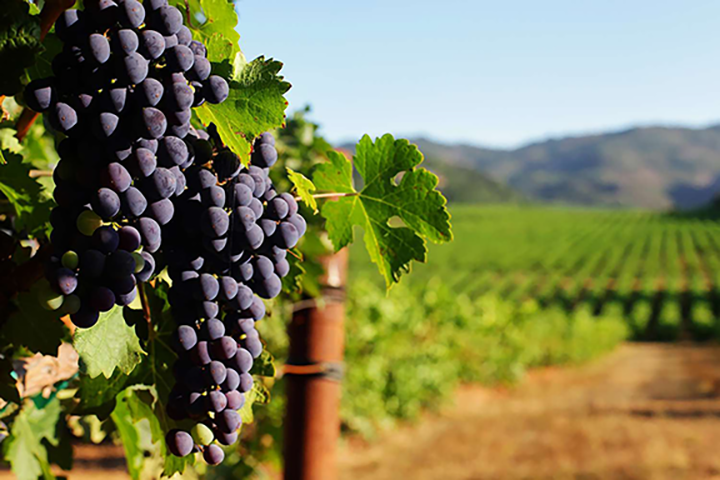
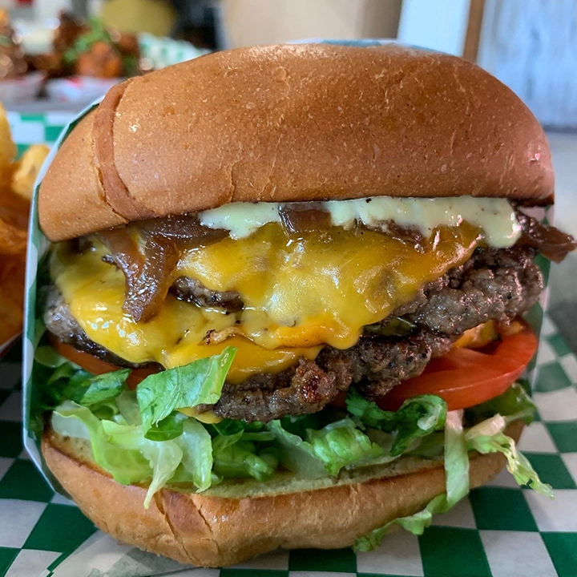

When I think of Napa , I think of rest and relaxation. Whether it is a massage, facial or trying a new food spot. Napa is the place to go
Since it about 45 mins away from Oakland I like to visit at least once every few weeks.


Five Favorite Food Spots in the Bay Area
- Oles Waffle Shop Alameda
- Hazels Kitchen SF
- Chef Smellys Oakland
- Guadalajara Mexican
- Sideshow cheeseburger 
- cheeseburger
The secret at Hazels Kitchen to getting the extra flavor in your wrap is to add croutons. If you want some extra razzle dazzle add bacon!